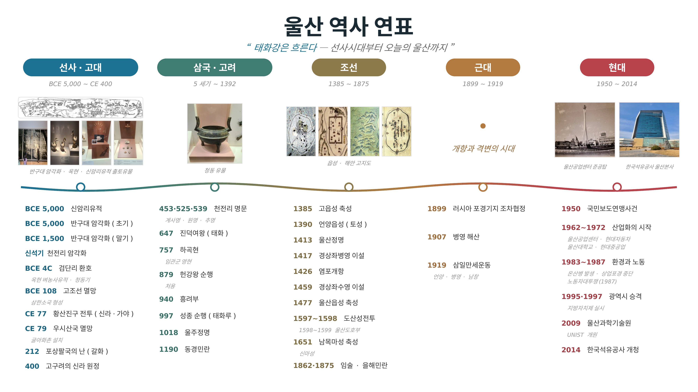
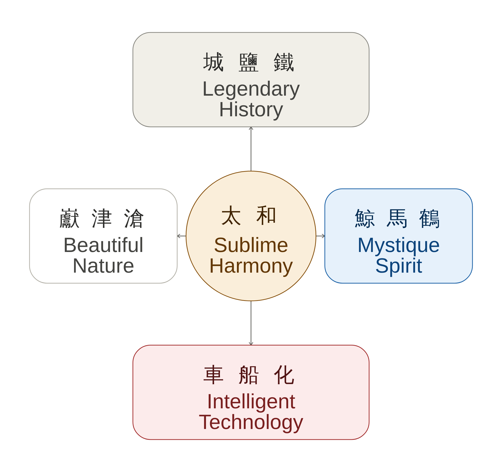
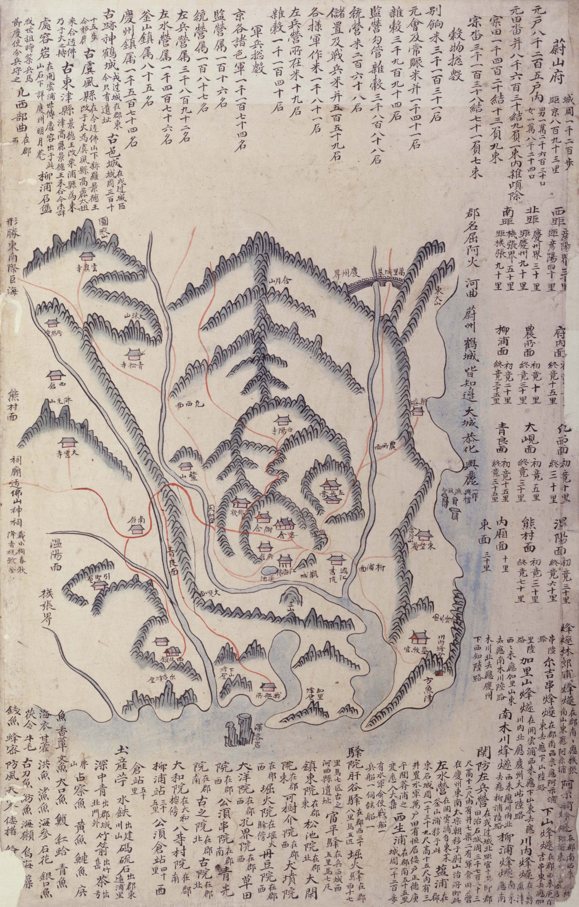
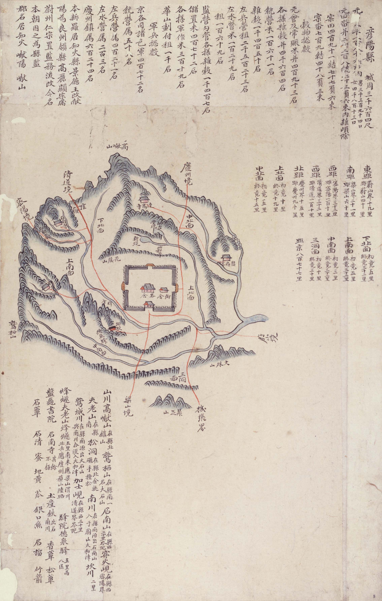

거도 居道
생몰년 미상 · 신라 탈해이사금대(1세기경)
『삼국사기』 열전에 전하는 신라 변경 관리. '마숙(馬叔)' 놀이로 위장해 군마를 훈련시킨 뒤 기습하여 우시산국(현 울주군 웅촌·온양 일대)을 병합했다.
울산, 신라 영토로 편입되다은월봉 샌님(pyarcher.netlify.app)
태화강은 흐른다
스크롤 또는 클릭으로 이동
태화강은 흐른다 — 선사시대부터 오늘의 울산까지

太和 · 정원박람회 테마 개념도

1872년 지방지도

1872년 지방지도

신라의 변경에서 왕경의 설화까지 — 울산이 처음 역사에 등장하는 순간들
1세기경 ~ 7세기
생몰년 미상 · 신라 탈해이사금대(1세기경)
『삼국사기』 열전에 전하는 신라 변경 관리. '마숙(馬叔)' 놀이로 위장해 군마를 훈련시킨 뒤 기습하여 우시산국(현 울주군 웅촌·온양 일대)을 병합했다.
울산, 신라 영토로 편입되다?~654 · 재위 647~654
즉위년(647)에 연호를 '태화(太和)'로 고쳤다. 이 연호와 자장율사가 울산에 세운 태화사(太和寺)에서 오늘날 '태화강' 지명이 유래한다.
태화강·태화루 지명의 뿌리?~886 · 재위 875~886
개운포(울산) 순행 중 동해용의 아들 처용을 만난 설화가 『삼국유사』에 전한다. 처용가·처용무의 배경이 되어 울산의 대표 설화로 이어진다.
처용설화의 무대, 개운포호족의 자치에서 문신의 유배지로 — 지방 세력과 중앙 권력이 교차하던 시대
10세기 ~ 14세기
신라말~고려초 · 생몰년 이설(일설 888~951)
울산 학성의 호족, 신학성장군. 고려 태조에 귀부하여 흥려부 성립에 공을 세웠다. 울산김씨·울산박씨 계통의 연원이 된다.
재지 호족 — 임명직 개념 이전1309~1345
청주 정씨, 좌사간대부 역임. 시정을 비판한 상소 후 참언을 입어 울주로 유배되었고, 울산을 소재로 한 시를 다수 남겼다.
울주 유배(연도 미상)1337~1392
성리학자, 문하시중. 이인임의 친원 외교를 비판하다 언양에 유배(1375~1377, 약 2년). 작괘천·반구정 등에 자취를 남겼다.
언양현 유배, 약 2년울산 향리 출신 외교관에서 종군일기를 남긴 무관까지
14세기 ~ 16세기
1373~1445
울산 향리 출신. 44년간 40여 회 대일 사행을 통해 포로 667명을 쇄환하고 계해약조 체결을 주도한, 조선 최초의 전문 외교관이다.
울산 향리(記官) → 외교관1399~1453
함길도 도절제사로 4군 6진 개척에 공을 세웠다. 계유정난 후 파직되자 거병하였다(이징옥의 난).
※양산 출신 — 울산 연고 미확인1617~1690
울산 박씨. 부친 박계숙과 함께 부자 2대에 걸친 종군일기 『부북일기』를 남겨 17세기 변방 군관의 생활상을 전한다.
함경도 회령 군관(1644~46)무너진 고을에서 다시 세운 도호부까지 — 전란 속 울산을 지킨 군수·의병·병마사
1592 ~ 1599
1554~1620
1592년 울산 가군수로 부임해 흩어진 백성을 모아 관군을 재건하고, 울산성 전투에서 권율을 도와 큰 전공을 세워 정식 울산군수가 되었다.
울산 가군수→정식 군수 1592~1599년경1554~1610
울산 남목동 출신. 의병을 모아 주사장(舟師長)으로 김태허를 도와 육전·수전에서 전공을 세웠다. 이후 다대포첨사·부산진첨절제사 역임.
울산 의병 주사장, 선무원종공신 1등1564~1624
평양성 탈환으로 명성을 얻은 무장. 1599년 울산이 도호부로 승격되자 병마절도사로서 초대 울산도호부사를 겸임했다.
초대 울산도호부사 겸임(1599)울산에 부임한 목민관들의 초상 — 감목관·부사·현감의 기록
17세기 ~ 19세기
1653~1725
역관이자 위항시인. 울산감목관으로 재임(1719~1722년경)하며 울산의 목장과 바닷가 생활상을 담은 시 120여 수를 남겼다.
위항문학의 선구, 『해동유주』1679~1759
안동 권씨, 대사간·대사헌 역임. 울산부사(1735~1738)로 구강서원을 중건했으며, 이황을 사숙한 영남 학자였다.
울산부사 재임 약 3~4년생몰년 미상
언양현감. 흉년에 백성을 구휼한 공으로 영세불망비가 세워졌으며, 이 비는 지금도 언양읍사무소 경내에 남아 있다.
언양현감 재임 3년(연도 미상)구한말과 일제강점기를 기록으로 남긴 세 갈래의 삶 — 지방관의 일기, 촌부의 일기, 개화파의 발자취
19세기 말 ~ 20세기 초
1834~1906
정선·자인·함안·고성·지도 등 여러 지방관을 역임하고 일기 연작 『총쇄록』을 저술한 기록의 달인이다.
※울산 재임 기록은 미확인1850~1933
부곡 출신 농촌 지식인. 21세부터 84세로 별세할 때까지 64년간 거의 빠짐없이 한문 일기를 남겼다. 곡물 가격과 강우·풍흉 기록이 상세해 근대 울산의 생활사·기후사를 보여주는 귀중한 사료다.
『심원권일기』 저술, 64년 생활일기(1870~1933)1868~1922
울산 개화파 선각자. 경남일보를 창립하고 일신여자고등보통학교 설립기금을 출연했으며, 임시정부에 독립운동 자금을 지원했다.
관직 아님 — 민간 유지한글 교육에서 민선 자치까지 — 현대 울산이 쌓아 온 교육과 민주주의의 토대
20세기 중반 ~
1894~1970
병영 출신 한글학자. 조선어학회 사건으로 옥고를 치렀고, 광복 후 문교부 편수국장으로 교과서 편찬을 지도했다.
관직 아님 — 학자·행정가생몰년 미상
경남도 상공과장 출신. 1962년 울산시 승격의 초대 시장으로 부임하여, 이후 4대 시장도 지냈다.
초대·4대 울산시장1938~2020
12·13대 국회의원. 민선 초대 울산시장(1995)으로 1997년 광역시 승격을 이끌었고, 초대·2대 울산광역시장을 지냈다.
초대·2대 울산광역시장이 기록은 지역사 문헌과 사전류를 종합해 구성한 1차 정리본으로, 아래 항목은 지속적인 검증과 보완이 필요합니다.
여러 사료에서 경상남도 양산 출신으로 일관되게 기록되어 있어, 울산과의 직접적 연고는 확인되지 않았습니다.
정선·자인·함안·고성·지도·여수·진보·익산·평택 등 지방관 이력에 울산(울주·언양) 재임 기록은 나타나지 않습니다.
박윤웅(신라말~고려초, 일설 888~951), 김천상, 홍승순의 생몰년은 확정된 정설이 없어 이설 또는 미상으로 표기했습니다.
김응서(김경서)는 1599년 울산도호부 승격 당시 병마절도사로서 초대 울산도호부사를 겸임했습니다 — 도호부 복설 시점(1598/1599) 논의의 1차 방증 자료입니다.